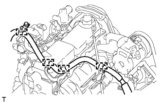
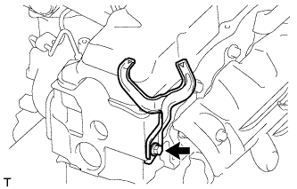
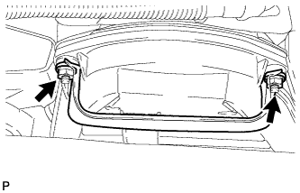
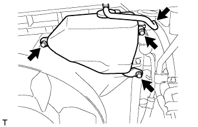
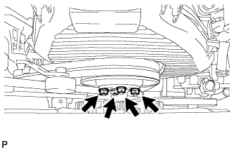
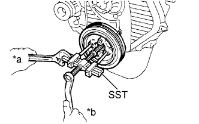
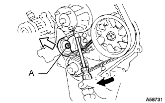
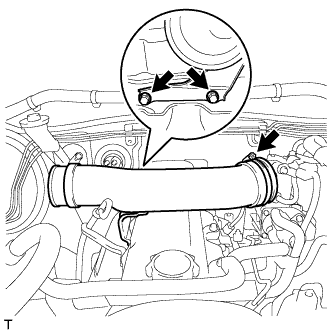

РАСПРЕДВАЛ > СНЯТИЕ |
| 1. DISCONNECT CABLE FROM NEGATIVE BATTERY TERMINAL |
| 2. REMOVE UPPER RADIATOR SUPPORT SEAL |
Освободите 13 фиксаторов и снимите верхнее уплотнение кронштейна радиатора.
| 3. REMOVE FRONT BUMPER COVER LOWER |
Remove the clip, 5 bolts and front bumper cover lower.
| 4. REMOVE NO. 1 ENGINE UNDER COVER SUB-ASSEMBLY |
Remove the 4 bolts.
 |
Unhook the engine under cover from the vehicle body as shown in the illustration.
| 5. DRAIN ENGINE COOLANT |
Ослабьте пробку сливного крана радиатора.

| *1 | Пробка радиатора | *2 | Бачок радиатора |
| *3 | Пробка сливного крана радиатора | *4 | Пробка сливного крана блока цилиндров |
Слейте охлаждающую жидкость, сняв крышку радиатора.
Ослабьте пробку сливного крана блока цилиндров.
Ослабьте пробку сливного крана блока цилиндров и слейте охлаждающую жидкость из двигателя.
| 6. REMOVE FRONT FENDER APRON SEAL RH |
Remove the 4 clips and fender apron seal.
| 7. REMOVE RESONATOR WITH AIR CLEANER CAP SUB-ASSEMBLY |
 |
Disconnect the sensor connector.
Detach the wire harness clamp.
Loosen the hose clamp and remove the resonator with air cleaner cap.
 |
Detach the 4 hook clamps, and then remove the air cleaner cap and resonator with air cleaner cap.
| 8. REMOVE AIR CLEANER FILTER ELEMENT SUB-ASSEMBLY |
| 9. REMOVE AIR CLEANER CASE ASSEMBLY |
 |
Remove the 3 bolts and air cleaner case.
| 10. DISCONNECT WIRE HARNESS |
Remove the terminal cap.
Remove the nut and generator wire.
Disconnect the generator connector and cooler compressor connector.
Detach the 4 wire harness clamps.
|  |
for LHD:
Detach the 4 wire harness clamps.
| 11. REMOVE WIRING HARNESS CLAMP BRACKET (for LHD) |
|  |
Remove the bolt and wiring harness clamp bracket.
| 12. REMOVE NO. 1 RADIATOR HOSE |
 |
Detach the clamp and remove the No. 1 radiator hose.
|  |
Remove the 2 nuts and hose clamp.
| 13. REMOVE RADIATOR RESERVE TANK ASSEMBLY |
|  |
Disconnect the reservoir hose from the upper side of the radiator tank.
Remove the 3 bolts and radiator reservoir.
| 14. REMOVE FAN SHROUD |
|  |
Loosen the 4 nuts holding the fluid coupling fan.
Remove the vane pump V belt and the fan and generator V belt (See page Нажмите здесь).
 |
Remove the 2 bolts holding the fan shroud.
Remove the 4 nuts of the fluid coupling fan, and then remove the shroud together with the coupling fan.
Remove the fan pulley from the water pump.
| 15. REMOVE VANE PUMP DRIVE PULLEY |
 |
Remove the 4 bolts, vane pump drive pulley and cooler compressor drive pulley.
| 16. REMOVE CRANKSHAFT PULLEY |
 |
Using SST, remove the pulley bolt.
| *a | Hold |
| *b | Turn |
|  |
Using SST, remove the pulley.
| *a | Hold |
| *b | Turn |
| 17. REMOVE IDLE PULLEY ASSEMBLY |
 |
Remove the 2 bolts and Idle pulley bracket.
| 18. REMOVE TIMING BELT COVER |
 |
Remove the 11 bolts, washers, timing belt cover, and 2 gaskets.
| 19. REMOVE TIMING BELT GUIDE |
Remove the timing belt guide.
| 20. SET NO. 1 CYLINDER TO TDC/COMPRESSION |
 |
Using the crankshaft pulley bolt, align the groove of the crankshaft pulley with the timing pointer by turning the crankshaft clockwise.
| *1 | Timing Mark |
 | Turn |
 |
Check that the timing marks of the camshaft timing pulley and No. 2 timing belt cover are aligned.
| *1 | Timing Mark |
| 21. REMOVE TIMING BELT |
 |
Turn the crankshaft 90° counterclockwise, and align the timing mark of the crankshaft timing pulley with the protrusion of the timing belt case.
| Turn |
|  |
Loosen the No. 1 timing belt idler bolt (A), and shift the idler to the left as far as possible.
| Pry |
 | Move |
Tighten the No. 1 timing belt idler bolt (A), and then relieve the timing belt tension.
Remove the timing belt.
| 22. REMOVE INTAKE PIPE |
|  |
Loosen the hose clamp and remove the 2 bolts and intake pipe.
| 23. REMOVE CYLINDER HEAD COVER SUB-ASSEMBLY |
Remove the 9 bolts, nut, cylinder head cover and gasket.
| 24. REMOVE CAMSHAFT TIMING PULLEY |
 |
Using the crankshaft pulley bolt, turn the crankshaft 90° counterclockwise and align the timing mark of the crankshaft timing pulley with the protrusion of the timing belt case.
| Turn |
| *1 | Timing Mark |
| *2 | Protrusion |
 |
Using SST, loosen the pulley bolt.
 |
Using SST, separate the timing pulley from the camshaft.
Remove the pulley bolt and timing pulley.
Remove the timing pulley woodruff key.
| 25. REMOVE NO. 2 TIMING BELT COVER |
Remove the 4 bolts and timing belt cover.
| 26. REMOVE CAMSHAFT OIL SEAL RETAINER |
Remove the 4 bolts, retainer and gasket.
| 27. REMOVE CAMSHAFT OIL SEAL |
Using a screwdriver and hammer, tap out the oil seal.
| 28. REMOVE CAMSHAFT |
 |
Turn the camshaft with a wrench so that the key groove faces upward.
| *1 | Upward |
| *2 | Key Groove |
 |
Uniformly loosen and remove the 10 bearing cap bolts in several steps in the sequence shown in the illustration.
Remove the 5 bearing caps and camshaft.